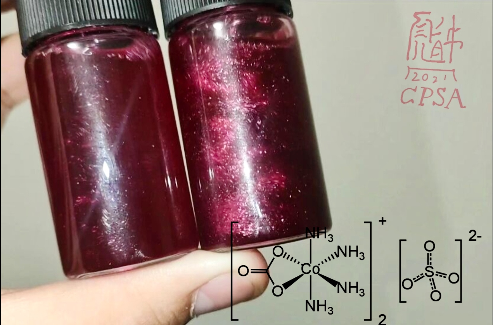

红晶雨制作完整教程

图源：CPSA
🎯 预览
项目概览：
难度等级：★★☆☆☆ (中级)
制备周期：2-3小时
成功率：75%
推荐人群：有一定化学实验基础者
所需材料：
硫酸钴七水合物(CoSO
4
·7H
2
O) 6g
碳酸铵[(NH
4
)
2
CO
3
] 10g
氨水(10%) 60mL
过氧化氢(30%) 3mL
乙醇(95%) 40-60mL
稀硫酸(可选)
烧杯、玻璃棒、滴管、加热设备
一、基础认识
1.1 化学特性
化学式：[Co(NH
3
)
4
CO
3
]
2
SO
4
系统名称
硫酸四氨碳酸钴(III)
外观特征
红色至紫红色晶体，在溶液中形成红色悬浮晶雨
配合物类型
八面体钴(III)氨配合物，具有几何异构现象
反应原理
Co
2+
在氨水和碳酸根存在下被H
2
O
2
氧化为Co
3+
，形成稳定的氨配合物
1.2 结构特点
配位结构
中心Co
3+
与4个NH
3
和1个CO
3
2-
配位
CO
3
2-
作为双齿配体，占据两个配位位置
形成八面体构型：CoN
4
O
2
晶体特性
红色菱形或针状晶体，在水中溶解度适中
颜色成因
Co
3+
(d
6
)在八面体场中的d-d电子跃迁
1
A
1g
→
1
T
1g
和
1
A
1g
→
1
T
2g
跃迁
吸收绿色光区(500-600nm)，呈现红色(600-700nm)
1.3 晶体学特性
晶系
单斜晶系或正交晶系（具体需查阅文献）
晶体习性
菱形或针状晶体，易形成细小晶体悬浮液
溶解性
在水中溶解度适中，在乙醇中溶解度显著降低
二、实验与制备
2.1 实验步骤
💡 硫酸四氨碳酸钴(III)红晶雨制备法
材料：硫酸钴、碳酸铵、氨水、过氧化氢、乙醇、烧杯、玻璃棒、加热设备
步骤一：配制钴盐溶液
称取6g CoSO
4
·7H
2
O于烧杯中，加入少量水溶解（如使用CoCO
3
则需加稀H
2
SO
4
助溶）
硫酸钴七水合物呈玫瑰红色，易溶于水。若使用碳酸钴，需加稀硫酸至刚好溶解
步骤二：加入碳酸铵
向钴盐溶液中加入10g碳酸铵，搅拌至基本溶解
碳酸铵水解：CO
3
2-
+ H
2
O ⇌ HCO
3
-
+ OH
-
会释放氨气：NH
4
+
+ OH
-
⇌ NH
3
↑ + H
2
O
操作时注意通风
步骤三：加入氨水
量取60mL 10%氨水，缓缓倒入溶液中并持续搅拌
颜色变化序列：
Co
2+
(aq)：玫瑰红色 [Co(H
2
O)
6
]
2+
加入氨水：橙黄色 [Co(NH
3
)
6
]
2+
氧化后：棕红色 [Co(NH
3
)
6
]
3+
最终：紫红色 [Co(NH
3
)
4
CO
3
]
+
步骤四：氧化反应
在持续搅拌下，用滴管逐滴加入30% H
2
O
2
，共约3mL
溶液颜色会逐渐变为深紫红色，表明Co
2+
被氧化为Co
3+
步骤五：加热处理
将溶液加热至微沸，维持10-15分钟
加热促进反应完全，并驱除过量的过氧化氢
步骤六：加入乙醇
在持续搅拌下，缓慢加入40-60mL乙醇
溶液会逐渐变红且颜色变浅，大量红色晶体开始析出
步骤七：晶雨形成
静置冷却，红色晶体悬浮于溶液中形成"红晶雨"效果
如需装瓶保存，可将上层悬浮液转移至西林瓶中
2.2 实验技巧
💡 提高成功率的关键点
氨水浓度控制
氨水浓度不宜过高，10%左右为宜，过高会影响晶体形成
过氧化氢添加
H
2
O
2
应逐滴加入，过快会导致反应剧烈甚至喷溅
乙醇添加速度
乙醇应缓慢加入并持续搅拌，过快会导致晶体聚集沉淀
三、安全与注意事项
3.1 化学品安全
氨水防护：
氨水有强烈刺激性气味，应在通风良好处操作，避免吸入
过氧化氢：
30% H
2
O
2
有强氧化性和腐蚀性，避免接触皮肤和衣物
钴盐毒性：
Co
3+
化合物中等毒性，LD
50
(大鼠口服)：~500-1000 mg/kg
3.2 操作安全
个人防护
必须佩戴防护眼镜、实验服和手套，操作后彻底洗手
加热安全
加热时防止暴沸，可使用水浴加热更安全
反应控制
氧化反应放热，需控制H
2
O
2
添加速度，防止反应过于剧烈
废液处理
含钴废液应专门收集处理，不可随意倒入下水道
3.3 稳定性说明
热稳定性：
加热可能分解，释放氨气
光稳定性：
钴配合物一般对光稳定
酸碱性：
酸性条件下会分解，释放CO
2
和NH
3
氧化还原：
Co
3+
在酸性条件下是强氧化剂
四、化学原理
4.1 反应机理
配位与氧化
Co
2+
首先与NH
3
形成[Co(NH
3
)
6
]
2+
，然后被H
2
O
2
氧化为Co
3+
氧化反应：2[Co(NH
3
)
6
]
2+
+ H
2
O
2
→ 2[Co(NH
3
)
6
]
3+
+ 2OH
-
配体交换
[Co(NH
3
)
6
]
3+
中的部分NH
3
被CO
3
2-
取代，形成[Co(NH
3
)
4
CO
3
]
+
配体交换：[Co(NH
3
)
6
]
3+
+ CO
3
2-
→ [Co(NH
3
)
4
CO
3
]
+
+ 2NH
3
碳酸根作为双齿配体，与Co
3+
形成更稳定的螯合物
沉淀析出
加入乙醇降低溶液极性，配合物溶解度急剧下降而析出
乙醇作用机理：
1. 降低水的介电常数，增加离子间静电引力
2. 降低配合物溶解度（相似相溶原理）
3. 促进晶核形成和晶体生长
五、成果展示与质量评估
优质红晶雨特征
优质晶雨：
颜色鲜艳，呈深红色至紫红色
晶体细小均匀，悬浮性好
溶液澄清透明，晶体悬浮其中
摇晃后形成美丽雨滴效果
问题晶雨：
颜色暗淡 - 氧化不完全或配位不完全
晶体沉淀 - 乙醇添加过快或过量
溶液浑浊 - 杂质过多或反应不完全
晶体过大 - 结晶速度过快
六、问题诊断与解决
常见问题排查
问题一：晶体不析出或析出量少
可能原因：
氨水过量、H
2
O
2
添加不足、乙醇添加过快
解决方案：
控制氨水量、确保H
2
O
2
添加足够、缓慢添加乙醇
问题二：晶体颜色不正（偏棕或偏紫）
可能原因：
氧化不完全、杂质影响、pH不当
解决方案：
确保H
2
O
2
添加充分、使用纯试剂、调节pH至碱性
问题三：晶体迅速沉淀
可能原因：
乙醇过量、溶液浓度过高、晶体生长过快
解决方案：
控制乙醇添加量、适当稀释溶液、降低结晶速度
七、科学原理扩展
7.1 配合物化学
晶体场理论
Co
3+
的d
6
电子在八面体场中分裂，电子跃迁吸收绿光而显红色
配体场强度
NH
3
属于中等强度配体，CO
3
2-
作为螯合配体增强配合物稳定性
7.2 视觉原理
悬浮效应
微小配合物晶体在溶液中形成悬浊液体系，产生"晶雨"视觉效果
光学特性
钴配合物的d-d跃迁产生强烈颜色，配合物晶体对光的散射增强视觉效果
八、实验变体与扩展
8.1 不同钴盐原料
硫酸钴
最常用原料，溶解性好，反应稳定
氯化钴
使用5g CoCl
2
·6H
2
O，颜色可能略有差异
硝酸钴
使用6g Co(NO
3
)
2
·6H
2
O，需注意硝酸根的影响
碳酸钴
使用2.5g CoCO
3
，需加稀硫酸助溶
8.2 颜色变体
改变配体
用乙二胺代替部分氨水，可获得不同色调的红色
改变阴离子
使用不同酸根（如Cl
-
、NO
3
-
）可获得不同晶形的配合物
九、保存与维护
9.1 保存方法
密封保存
使用西林瓶或螺口瓶密封，防止氨挥发和溶液蒸发
避光存放
钴配合物可能见光分解，应避免阳光直射
温度稳定
存放在阴凉处，温度变化可能导致晶体溶解或过度生长
定期检查
定期检查晶体状态，如沉淀过多可轻轻摇晃恢复悬浮
本章作者
CPSA，泌昌
晶体专家
内容导航
项目预览
基础认识
实验制备
安全事项
化学原理
质量评估
问题诊断
科学原理
实验变体
保存维护
返回首页